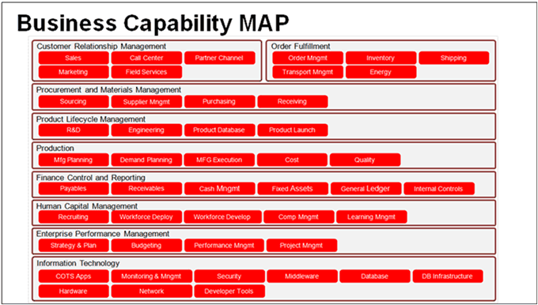
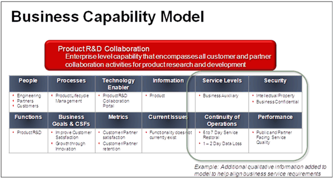

OUM |
Task Overview |
||
Method Navigation |
Current Page Navigation |
||
|
|
||||||||
The purpose of this task is to review existing documents and discuss these with the enterprise to obtain a view of their business or architectural capabilities. Start with the business capabilities and for each business capability relevant for the engagement build a Capability Model showing the essential elements of the capability and the relationships to the factors that make the capability actionable through people, processes and systems.
INIT.ACT.EDGI Execute Discovery - Gather Information (As Is)
Capability Analysis Results
This work product depicts which capabilities the organization requires to execute its strategy and how they are prioritized, and then provides an analysis of each capability that is relevant for the engagement.
You should follow these steps:
No. |
Task Step | Component | Component Description |
|---|---|---|---|
1 |
Determine the Capability Analysis Objectives | Capability Analysis Objectives | The Capability Analysis Objectives describe the purpose of the analysis and what kind of information is expected from the analysis results. |
| 2 | Create Top-Level Business Capability Map. | Top-Level Business Capability Map | The Top-Level Business Capability Map provides a common view of what the organization requires to execute its strategy. Capabilities are a combination of people, processes, and technology that serve a common purpose. |
3 |
Select top-level capabilities relevant for the scope of the engagement. | Prioritized Top-Level Capabilities | The Prioritized Top Level Capabilities contain a sub-view of the Top-Level Business Capability Map showing those capabilities that should be analyzed further. Also, each capability has now been prioritized. |
4 |
Determine Capability Model Components. | Capability Model Components | The Capability Model Components describe all aspects that should be analyzed for each capability. Which aspects are relevant is dependent on the engagement at hand. |
5 |
Create Capability Model for each top-level capability. | Capability Model Analysis | The Capability Model Analysis shows the analysis of each business capability for each component defined in the Capability Model Components. There will be one Capability Model for each business capability within the scope. |
It is recommended that you create multiple views of the Capability Model to reflect the various qualitative perspectives you are investigating.
Depending upon the scope of the engagement (segment, domain, or time), the Capability Model should be developed to capture the essential details that define the capabilities defined in the capability map. For example, if the scope is constrained by segment, define only the Capability Models appropriate for the section. When time is limited, focus first on those capabilities that are changing.
The Capability Map provides relational details between organizations, roles, technology, processes, metrics, objectives, etc. Additional qualitative information can be added to help begin the development of business services.
In order to perform a proper analysis, it is important to have a good understanding of the objectives of the analysis. The objectives typically vary depending on the type of engagement. For example, you may want to do an analysis to determine what business capabilities are important to support a certain business objective, or you may want to do an analysis to determine which business capabilities can be best supported through a SOA strategy, a Cloud strategy, or some other strategy.
The capability map provides a common view of what the organization requires in order to execute its strategy. Capabilities are a combination of people, processes, and technology that serve a common purpose. Capabilities typically consist of subordinate capabilities. Consider the following example:

Determine which top-level business capabilities you should focus on further as part of the scope of the engagement at hand. Be certain that there is an agreement on this before continuing with the next step. If time is limited, select only those capabilities that are changing. Prioritize the capabilities within scope so that you continue with the most critical ones first.
When you analyze each business capability, the goal is to get a deeper understanding of the relationships between the given capability, the organization, and the technology that should support the capability. Therefore, define the required elements of the Capability Model that will provide you with this view. It may vary based on the type of engagement.
A Capability Model should define the essential components of the operations of the business for a business capability. The components describe the essential elements of the capability and the relationships to the factors to make the capability actionable through people, processes and systems. The following is a list of typical components:
Create a Capability Model for each of the business capabilities that you have identified to be within the scope of the engagement. Start with the highest prioritized capability. Below is an example Capability Model for for one of the capabilities shown in the Capability Map example above, specifically, the Product R&D Business, using the components listed above:

Missing capabilities or duplicate capabilities may lead to either a lack of ability to meet an objective, or inefficient operations.
This task involves the following method roles:
Role |
Responsibility |
% |
|---|---|---|
Enterprise Architect |
Work with the enterprise to identify the business capabilities, components and Capability Model. | 100% |
Customer Enterprise Architect |
Work with the enterprise architect to identify the business capabilities, components and Capability Model. | * |
* Participation level not estimated.
You need the following for this task:
Prerequisite |
Usage |
|---|---|
Enterprise Organization Structures (BA.020) |
Use the Enterprise Organization Structures to identify level 0 business capabilities. |
Enterprise Function or Process Model (BA.040) |
Use the Enterprise Function or Process Model to identify business capabilities. |
Current Enterprise Architecture (EA.030) |
Use the Current Enterprise Architecture to review already identified high-level architectural capabilities. |
The following templates and tools are available to assist with this task:
Template File Name |
Comments |
|---|---|
| MS Visio - Use this template to create a project-specific Top-Level Business Capabilities to insert into the Capability Analysis Results presentation. | |
| MS PowerPoint - Use this template to present the Capability Analysis Results. |
The Capability Analysis Results are used in the following ways:
Distribute the Capability Analysis Results as follows:
Use the following criteria to check the quality of this work product:

Copyright © 2006, 2016, Oracle and/or its affiliates. All rights reserved.